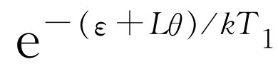
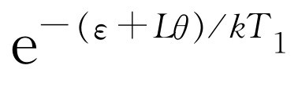
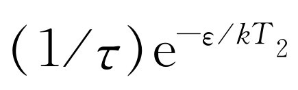
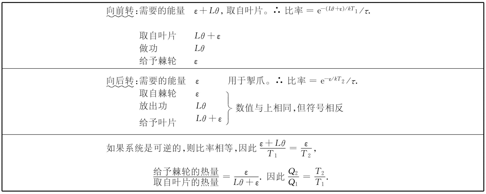

在这一章中我们要讨论棘轮和掣爪，这是一种非常简单的只让转轴往一个方向转动的装置。对某个东西只往一个方向转动的可能性需要作一些详尽而仔细的分析，这里有一些十分有趣的结论。
我们现在所安排的讨论，目的在于要从分子动理论的观点出发，对从一台热机中所能得到的功具有最大值这一事实提供一个基本的解释。当然，我们已经知道了卡诺论证的实质，但是能够找到一个基本的解释就好了，所谓基本是指我们能从物理上看出发生一些什么而言。现在已经有一些复杂的数学论证，它从牛顿定律出发说明当热量从一个地方流到另一个地方时，我们只能得到一定量的功。但是，把它变成基本的证明却存在着很大的困难。概而言之，虽然我们可按照数学方法一步一步地进行推导，但是并不理解它。
在卡诺的论证中，关于从一个温度到另一个温度之间所能取出的功不能大于一定的数量这一点是从另一个公理推出的，那就是说：如果每一样东西都处在相同的温度下，那么就不可能通过一个循环过程来使热量转变为功。所以先让我们回过头来看看为什么这个比较简单的命题至少对一个基本的例子来说是正确的。
我们试图发明一个违反热力学第二定律的装置，它是一个能从所有东西都处在相同温度的热库中取出功来的小玩意儿。假设有一箱处在一定温度下的气体，其中有一根带叶片的转轴（见图46-1，但取T 1 =T 2 =T ）。由于气体分子撞在叶片上，叶片会振动和跳动。我们要做的是在轴的另一端套上一个转轮，它只能沿一个方向转动，这就是棘轮和掣爪。于是，当轴试图往一个方向跳动时，它不能转动，而往相反方向跳动时，它能转动。于是，轮子将缓慢地转动，或许，我们甚至可以把一个跳蚤缚在一根从轴上的鼓轮悬挂下来的弦上，并将它提起来！现在我们要问这是否可能？按照卡诺的假设，这是不可能的。但是如果光看这个轮子，那么最初的印象 会认为这是完全可能的。所以我们必须更仔细地研究一下。的确，如果观察棘轮和掣爪，我们会看到一些复杂的情况。
首先，我们的理想化棘轮是尽可能简单的，尽管如此，总还有个掣爪，而在掣爪上又必须有一根弹簧。在经过一个轮齿后，掣爪必须又返回来，所以弹簧是必要的。
这个棘轮和掣爪的另一个特性在图上没有画出，但却是很本质的。假设这个装置由完全弹性的部件组成。在掣爪提离一个轮齿的边缘后，就被弹簧拉回来，再撞到轮子上，并且继续撞来撞去。于是，当另一个涨落到来时，轮子可能往相反方向转动，因为当掣爪跳起的那个时刻轮齿可能在它的下方！所以我们这个轮子不可逆性的实质部分是一种使跳动中止的阻尼或减弱的机制。当然在阻尼出现时，掣爪中的能量跑到了轮子上，并表现为热量的形式。所以，在棘轮转动时，轮子将越来越热。为了使事情再简化一些，我们可以在轮子四周充以气体来带走一些热量。无论如何，我们假设气体将和轮子一起升高温度。这种情况会永远继续下去吗？不行！棘轮和掣爪两者都处在某个温度T 下，也都有布朗运动。也就是说，每当作用在叶片上的布朗运动企图使轮轴反转时，如果碰巧掣爪自己正好跳起一个轮齿的高度，它就会让这个轮齿转过。随着这个装置越来越热，这种情况就发生得越频繁。
所以，这就是这个装置不可能“永动”的原因。当叶片受到碰撞时，有时掣爪提高而越过轮齿边缘，但有时当叶片企图朝相反方向转动时，掣爪已经由于它在轮边运动的涨落而被提升，这样，轮子就回过来朝反方向运动！净结果等于零。不难证明，当两边的温度相等时，轮子没有净平均运动。当然，它会往这个方向或那个方向作多次晃动，但不会如我们所希望的那样只顺着一个方向转动。
让我们来看看理由何在。为了把掣爪提高到一个轮齿的顶部，必须克服弹簧做功。我们称这个能量为ε ，两个轮齿之间的夹角为θ 。系统可以积聚起足够的能量ε 使得掣爪越过轮齿顶部的几率是e-ε / kT 。但掣爪由于偶然原因而提高的几率也是e-ε / kT 。因此掣爪提高而轮子可以自由地倒转的次数就等于在掣爪放下时我们具有足够的能量使轮子正转的次数。于是我们取得一种“平衡”，因而轮子不会转动。
现在我们继续讨论下去。我们举这样的例子，设叶片的温度为T 1 ，而轮子或棘轮的温度是T 2 ，T 2 小于T 1 。由于轮子较冷，掣爪的涨落相对地要少一些，因而要使它获得能量ε 是很难的。因为叶片的温度T 1 较高，它将经常地取得能量ε ，所以我们的装置将像设计的那样沿着一个方向转动。
现在我们来看看它是不是能够提起重物。在鼓轮中间我们缚上一根线，将一个重物，比方说跳蚤悬挂在线上。设L 是重物所产生的力矩。如果L 不太大，那么由于布朗涨落将使装置比起其他方向更多地往一个方向转动，它就会提起重物。我们要求出它可以提起多大的重量以及转动得多快，等等。
首先我们考虑向前转动，这是人们通常设计的棘轮转动方式。为了向前转一步，要从叶片末端取得多少能量呢？要提起掣爪，必须取得能量ε 。轮子反抗力矩L 转过角度θ ，所以还需要能量Lθ 。这样，必须取得的总能量是ε +Lθ 。得到这样的能量的概率正比于 。实际上，这不仅是一个取得能量的问题，而且我们还希望知道每秒它具有这个能量的次数。每秒钟的概率正比于 ，我们称此比例常数为1/τ 。不管怎样这个常数最后将会消去。当向前转一步时，对重物所做的功是Lθ 。从叶片中取出的能量是ε +Lθ 。弹簧用能量ε 拉紧，然后它卡嗒、卡嗒地跳起，弹回，使这些能量变成了热量。所有由叶片取得的能量都花在提高重物和驱动掣爪上，然后掣爪又落回来，并将热量传给另一边。
现在我们来看一看相反的情况，即反过来转动。这时会出现什么呢？为了使轮子向后转，我们必须做的只是提供能量来把掣爪提得足够高以使棘轮能滑过去。这个能量仍是ε 。每秒钟使掣爪提得这么高的概率是 。比例常数是相同的，但是因为温度不同，这次出现了kT 2 项。当出现这种情况时，由于轮子向后转，功就被释放出来。滑过一个轮齿要放出Lθ 的功。所以，从棘轮系统取得的能量是ε ，而给于叶片那边温度为T 1 的气体的能量是Lθ +ε 。这需要稍加思索才能看出其中的道理。假设偶然由于一次涨落，掣爪自动地提高，那么当它落下时，弹簧把它推向轮齿，由于轮齿压在一个斜面上，于是就有一个力企图转动轮子。这个力在做功，而由小重物产生的力也在做功。两者加在一起就是总的力，而所有的能量都缓慢地在叶片末端以热的形式放出（当然，按照能量守恒定律，这必定如此，不过我们还是有必要透彻地思考这个问题）。我们注意到，所有这些能量都完全相等，但是符号则相反。这样，重物或者缓慢升高，或者缓慢放下，取决于这两个比率中哪一个更大。当然，它不断上下跳动，一会升高，一会降低，但我们讲的是平均的行为。
假定对于某个特定的重物两种比率正好相等，那么我们可以在线上加上一个无限小的重物。这个重物将缓慢地下落，因而对机器做了功。能量将从棘轮取出并传给叶片。假如我们相反地取走了一点重量，就会出现相反的不平衡情况；重物被提高，热量从叶片中取出，并传给轮子。这样倘使重物的大小正好使两种几率相等，我们就得到卡诺可逆循环的条件。很明显这个条件就是（ε +Lθ ）/T 1 =ε /T 2 。假设机器缓慢地提起了重物。由叶片取得的热量是Q 1 ，释放给轮子的热量是Q 2 ，这两个能量的比是（ε +Lθ ）/ε 。假如我们缓慢地降低重物，也会有Q 1 /Q 2 =（ε +Lθ ）/ε 。于是（见表46-1）我们就有
表46-1 棘轮和掣爪的运行过程小结
此外，我们所得出的功与由叶片取出的能量之比和Lθ 与Lθ +ε 之比相同，因此也就是（T 1 -T 2 ）/T 1 。由此可见，如果我们的装置可逆运行时，不可能得出比这更多的功。这就是我们从卡诺的论证希望得到的结果，也是本讲的主要结果。然而我们可以利用这个装置来理解若干其他现象，甚至包括那些偏离了平衡状态，因而也就超出了热力学范畴的现象。
我们现在来计算一下，如果每件东西的温度都相同，那么当在鼓轮上悬挂一个重物时，我们的单向装置将会转动得多快 。当然，如果拉得非常非常紧，就会出现种种复杂现象——掣爪滑过棘轮，或者弹簧断裂，等等。但是假定我们只是轻轻地拉，那么每件东西都正常地工作。在这种情况下，如果记得两个温度是相同的，上述对于轮子向前转和向后转的概率的分析是正确的。轮子每转一下都通过一个角度θ ，所以角速度是θ 乘以每秒钟内转一下的概率。向前转的概率是（1/τ ）e-（ ε + Lθ ）/ kT ，向后转的概率是（1/τ ）e-ε / kT ，所以对于角速度有
ω =（θ /τ ）［e-（ ε + Lθ ）/ kT -e-ε / kT ］=（θ /τ ）e-ε / kT （e-Lθ / kT -1）.（46.1）
如果我们画出ω 对L 的曲线，就得到如图46-2所示的形状。我们看到L 取正还是取负有极大的差别。如果L 在正的区域内增加（这在我们试图使轮子向后转时出现），向后转的速度趋于一个常数。当L 变为负值时，ω 实际上上升得很快，因为指数幂的增长非常迅速。
于是，由不同的力得到的角速度很不对称。向一个方向转动很容易：一点点力就能得到很大的角速度。而向另一个方向转动时，即使我们用很大的力，轮子还是几乎不转动。
我们发现，在电子整流器 中也有同样的情况。这时出现的不是力而是电场，不是角速度而是电流。对于整流器，电压不与电阻成正比，这种情况是非对称的。我们对于机械整流器所作的分析，也同样适用于电子整流器。事实上，上面得到的这一类公式正是典型的作为电压函数的整流器载流特性曲线。
现在把所有的重物拿走，并且观察这台原来的机械。如果T 2 小于T 1 ，棘轮向前转，这是每个人都相信的。但是初看起来很难相信还存在着相反的过程。如果T 2 大于T 1 ，棘轮就会朝反方向转动！一个具有大量热能的动态棘轮会使自己反转，因为掣爪一直在跳动着。如果在某个时刻掣爪处在轮齿斜面某处，它就会斜着推动这个斜面。但它总是经常推在一个斜面上，因为如果它碰巧提得足够高，以致超过了一只轮齿的边缘，这个斜面就会滑过去，而又会重新落在另一个斜面上。所以，可以制作一个理想的热的掣爪和棘轮，它能够往与原设计截然相反的方向转动！
无论我们的单向转动的设计如何巧妙，如果两个温度严格相等，那么向一个方向转动的倾向不会比向另一个方向转动的倾向更大。当我们在某一时刻观察时，它可能往这个或那个方向转动，但是从长远来看，往哪儿也不转动。正是这个往哪儿也不转动的事实，实际上反映了一个深刻的基本原理，而整个热力学就建立在这个原理上。
究竟有哪一条更深刻的力学原理告诉我们，如果温度处处相同，则我们的装置最终既不向右转也不向左转？很明显，我们有了一个基本命题：不可能设计这样一台机器，在让它自己运行足够长时间以后，它往一个方向转动的可能性比往另一个方向转动的可能性大。我们必须试试看怎样从力学定律推得这个结论。
力学的定律大致如下：质量乘加速度是力，而作用在每个粒子上的力是所有其他粒子位置的某个复杂函数。也有其他一些情况，其中力与速度有关，比如在磁学中就是如此，但现在我们不去考虑这一点。我们取一种比较简单的情况，比如重力，其大小只与位置有关。现在，假定我们已解出了一组方程，并且对于每个粒子求得了一定的运动表示式x （t ）。在足够复杂的系统中，解是十分复杂的，而且随着时间的推移会出现令人非常惊异的事情。如果我们对各个粒子写下任何认为合适的排列，那么只要等待足够长时间，我们将看到这种排列实际上会出现！如果我们跟随粒子运动的解足够长的时间，可以说，它会尝试做每件事情。在最简单的装置中，这不一定是绝对必须的，但是当系统充分复杂，带有足够多的原子时，就会出现这种情况，此外，解还能起一些别的作用。如果我们解运动方程，也许会得到如（t +t 2 +t 3 ）这样的函数。我们声称另一个解将是-t +t 2 -t 3 。换句话说，假定在整个解中处处都以-t 代替t ，我们将再一次得到同一个方程的一个解。这个结论是从下述事实得出的：如果在原来的微分方程中以-t 代替t ，由于在方程中只有对t 的二阶导数出现，因此方程不会有任何变化。这意味着，如果我们有了一个确定的运动，那么严格相反的运动也是可能的。如果我们等待足够长的时间，系统将出现完全混乱的状况，它有时以这种方式运动，有时又以其他方式运动。没有哪种运动比另一种更占优势。所以不可能设计一台足够复杂的机器，并且从长远来看，它以一种方式运动的可能性会比另一种方式更大。
人们可能会想出一个对它来说上面这一点明显不正确的例子。比方说，如果使一个轮子在真空中转动，它会永远同样地转动下去。所以，存在着某些条件（像角动量守恒那样）违背上述的论证。但这只要求把论证作得更小心一些。也许，墙壁或者某些类似于墙壁之类的东西取走了角动量，这样我们就没有特殊的守恒定律。可见，如果系统是足够复杂的，论证就是正确的。它建立在力学定律可逆这一事实的基础上。
出自于对科学史的兴趣，我们想提一下麦克斯韦发明的一个装置，麦克斯韦是第一个建立气体动力论的科学家。他的假设如下：有两箱同温度的气体，箱子之间有一个小孔。孔上坐着一个小妖（当然，它可以是一台机器），在小孔上还有一扇可以由小妖打开或关闭的门。它注视着从左边来的分子，无论何时只要看到速度很快的分子，就把门打开，看到速度很慢的分子，就将门关上。如果我们要求它是一个极为特殊的小妖，使它的脑后也长着眼睛，它就能对来自另一边的分子作相反的事情。这样它就让慢的分子跑到左边，而让快的分子跑到右边。很快左边将变冷，右边将变热。问题在于，是否因为我们有了这样一个小妖而破坏了热力学定律？
结果表明，如果我们造出的是一个有限大小的小妖，它自己就会变得这样热，使得过了一会儿以后，不能很好地看清楚东西。举个例子来说，一个可能是最简单的小妖可以是一扇用一根弹簧扣住的遮住小孔的活动门。一个快速分子可以通过，因为它能推开活动门。慢的分子不能通过而被弹回。但是这个东西不是别的什么，不过是我们的棘轮和掣爪在另一种形式下的体现罢了。最后这个装置会发热。如果假设小妖的比热不是无限大，它一定会发热，它只有有限数目的内部轴承和转轮，所以不能清除由于观察分子而取得的额外热量。不久，它就会由于布朗运动而摇动得这么厉害，以致再也不能说出它自己是来还是去，更不用说分子是来还是去了，所以它不起作用。
所有的物理定律都可逆吗？显然不是！不信就试试看让一个炒蛋重新变成新鲜蛋吧！如果把电影倒过来放，不出几分钟就会使人们放声大笑。所有现象的最自然特征莫过于它们的明显的不可逆性。
那么，不可逆性是从哪里来的？它并非来自牛顿定律。如果我们声称每件事的行为最后都要按物理规律来理解，并且，如果所有的方程最后都有这么一个奇妙的性质，即以t =-t 代入时，将得到另一个解，那么一切现象都是可逆的。为什么自然界在宏观的尺度上，事情都是不可逆的呢？显然必定存在着某条定律，某个尚未明了然而是基本的方程，或许在电学中，或许在中微子物理学中，对它来说，时间朝哪个方向这一点是至关重要 的。
我们现在来讨论这个问题。我们已经知道其中有一条物理定律指出：熵始终是增加的。如果有一个热的和一个冷的物体，那么热量总是从热的物体流到冷的物体。所以，熵的定律就是这样的一条定律。但是我们希望从力学观点出发来理解熵的定律。事实上，我们刚才就是从力学论证成功地获得了热量不可能自动倒流这一论证的所有结果，并由此得到了对于热力学第二定律的一种理解。看来我们能从可逆的方程得出不可逆性。但是，我们所用的只是 力学论证吗？我们来更仔细地考察一下。
由于我们的问题和熵有关，因此必须设法找出一种熵的微观描述。如果在某种东西，比如气体中，有一定的能量，我们可以得出它的一幅微观图像，并且说每个原了都有一定的能量。所有这些能量相加起来就是总能量。类似地，或许每个原子都有一定的熵，把每个累加起来就得到总熵。但事情并不那么顺利，我们来看一看会发生什么情况。
举个例子说，我们要计算某一确定温度下，某一体积中的气体和在相同温度下，另一个体积中气体的两个熵值之差。由第44章知道，对熵的改变有
在现在的情况下，气体的能量在膨胀前后是相同的，因为温度没有变化。所以，我们必须加入足够的热量以补偿气体所做的功，或对每一个体积的小变化来说
dQ =P dV .
把dQ 代入上式，就有
这正是第44章得到的结果。例如，若体积膨胀为2倍，则熵变为Nk ln2。
现在我们考虑另一个有趣的例子。假定有一个容器，中间放一块隔板，一边是氖气（“黑”分子），另一边是氩气（“白”分子）。我们取出隔板，让它们混合起来。试问熵的改变有多大？可以设想用两个活塞来代替隔板，一个活塞上有一些只让白分子而不让黑分子通过的小孔，另一个活塞的作用正相反。如果把两个活塞往相反方向各自推到底，我们就会看到，对每一种气体来说，情况正像上面刚解过的那样。所以，熵改变了Nk ln2，这意味着，每个分子的熵增加了k ln2。2这个因子的得出与分子占有的额外空间有关，这一点是颇为奇特的。它不是分子本身的特性，而是与分子能活动的空间大小 有关。这是一个奇怪的情况，熵增加了，但每样东西具有相同的温度和能量！唯一发生变化的是分子的分布不同了。
我们都很了解，如果把隔板拿走，经过一段较长时间后，由于分子的碰撞、跳动、敲击等等，它们全都混合起来。有时一个白分子跑向黑分子，有时一个黑分子跑向白分子，也可能彼此穿过。渐渐地，由于偶然的机会，白分子进入到黑分子的空间，黑分子也进入到白分子的空间。如果我们等待足够长的时间后，就会得到一种混合的状态。很清楚，这是真实世界中的一种不可逆过程，它应当包含有熵的增加。
在这里我们有了一个完全由可逆事件组成的不可逆过程的简单例子。每当两个分子碰撞后，它们各以确定的方向离开。假如我们将拍摄某次碰撞过程的电影倒过来放，电影没有任何不对头的地方。事实上这一类碰撞正与另一类碰撞相似。所以混合过程完全是可逆的，然而它又是不可逆的。我们都知道，如果起先黑、白分子分开，几分钟内它们就会混合起来。如果我们坐下来观察好几分钟，它们也不会重新分开，而是仍然混合在一起。所以我们有了一种建立在可逆情形的基础上的不可逆性。但是现在我们也同时看到其原因 何在。开始的排列在某种含义上是有序 的，由于碰撞产生的混杂，它变成无序。从有序的排列到无序排列的变化是不可逆性的起源 。
的确，如果我们拍下这些分子运动的影片，再将它倒过来放，我们会看到它会渐渐地变成有序。也许有人会说：“这是违反物理定律的！”那么我们将影片再重放一次，并观察每一次碰撞。每一样东西都是完善的，都遵循物理定律。当然，原因在于每个分子的速度都是适当的，所以如果沿着所有的路径返回，它们就会回到原来的状态。但是，这种情况是极不可能出现的。如果气体在开始时没有什么特殊的安排，只是白的归白，黑的归黑，它就永远不会回到原来的状态。
这样我们就必须讲一下无序是什么意思，有序又是什么意思。这不是什么有序合我们的意，无序不合我们意的问题。在上节所提到的例子中，混合与不混合的差别如下：假设我们把空间划分成许多小体积元。如果将白分子和黑分子分布在这些体积元中，并使白分子分布在一边，黑分子分布在另一边，试问有几种这样的分布方式？另一方面，如果对黑白分子分布到哪里不加任何限制，又有多少种分布方式？显然，在后一种情况下的排列方式要多得多，我们以在从外部看来完全一样的条件下，内部可能有的排列方式的数目来作为“无序”的量度。这种排列方式的数目的对数就是熵 。在黑白分子分开的情况下，排列方式的数目较少，故熵较小，或“无序性”较小。
这样，有了上面对无序的术语上的定义，我们就可以理解这个命题。第一，熵是无序的量度。第二，宇宙总是从“有序”变到“无序”，所以熵总是增加的。“有序”并不是指我们所喜欢的排列这个意义的有序，而是指从外部看来完全一样的条件下所具有的内部不同排列方式的数目是相当有限的。在把气体混合的影片倒过来放的情况下，并没有我们所想象的那么多的无序。每个单个原子都恰好以正确的速率和方向出现。熵并不像表面上看来那么大。
其他物理定律的可逆性如何？当我们谈到由加速电荷产生的电场时，我们曾说过必须取推迟场。在时刻t ，离电荷为r 的地方，我们取加速电荷在t -r /c ，而不是t +r /c 的时刻所产生的场。这样，初看起来，似乎电学定律是不可逆的。然而，非常奇怪的是，我们所应用的定律来自实际上可逆的麦克斯韦方程组。而且，有可能论证如果我们只用超前场，即由在时刻（t +r /c ）的事态而引起的场，并在一个完全封闭的空间里始终如一地应用它，那么所发生的每一件事情都和使用推迟场严格一样！因此，这种电学中的表观不可逆性，至少在一个闭合体内，根本不是一种不可逆性。我们已经对此有过某种体会，因为我们知道，一个振动电荷产生的场从闭合体的四壁反射回来后，最后达到一种没有什么偏向性的平衡。用推迟场只是为了解法上的方便而已。
就我们所知，所有的物理学基本定律，像牛顿方程那样，都是可逆的。那么不可逆性究竟是从哪里来的呢？它是从有序变到无序时产生的，但是在我们知道有序性的起源以前，我们并不理解这一点。为什么我们自己每天所发现的情况总是不处在平衡态呢？有一个可能的解释如下。我们不妨再来看一下黑白分子混合的箱子。如果我们等待足够长的时间，大多数白分子都在一边，大多数黑分子都在另一边的分布情况，虽然总的讲是不大可能的，但偶尔或许仍是可能的。此后，随着时间的推移，连续不断地出现一些偶然事件，它们又重新混合起来。
这样，对今天世界之所以高度有序的一个可能解释是，这恰恰是一种侥幸。或许我们的宇宙碰巧在过去发生过某种涨落，使得各种事物得以分开，而现在它们正在重新混合起来。这种理论不是非对称的，因为我们可以问，在不远的将来或是在不远的过去分离的气体是怎样的。不论哪一种情况，我们在分界面上都看到一层灰雾，因为分子正在重新混合。无论我们是往前还是往后计算时间，气体都在混合。所以这种理论认为不可逆性只是生活中的许多偶然事件之一。
我们试图论证情况并非如此。假定我们不是一下子观察整个箱子，而只是观察其中的一小部分，并且在某个确定的时刻，发现了某种程度的有序，那么在这一小部分空间中，黑分子与白分子是分开的。我们应当怎样来推论那些我们还没有观察过的地方的状况呢？如果我们确实认为有序是依靠涨落从完全的无序中产生的，那么我们一定是碰到了能产生这种情况的最可能的涨落，而最可能的情况不是 它的其他部分也是分离的！所以，我们从这个世界是一种涨落的假设，能够预期的全部结论是，如果观察以前从未见到过的那一部分世界，我们将发现它已混合起来，而不像刚才所见到那部分世界那样。如果将有序归因于涨落，那么除了刚才注意到的地方之外，不能期望任何其他地方有序。
现在我们假定分离之所以产生是由于宇宙的过去实际上是有序的。它并非由一次涨落而造成，而是因为整个事情原来一直是区分为白的和黑的。现在这种理论预言在其他地方也将存在着有序——这种有序不是由于涨落，而是由于在时间的开始具有更高得多的序。这样，我们可以期望在人们还没有观察过的地方发现有序。
例如，天文学家只观察过天上的某些恒星。他们天天将望远镜转向一些新的恒星，而新的恒星的行为与其他恒星相同。因此我们可以推论宇宙不是一种涨落，而有序乃是对于万物开始时的状况的一种记忆。这并不是说我们明白了它的逻辑。由于某种原因，宇宙在某一时刻对它的能量来说有过非常低的熵，此后熵就不断增加。这就是通向未来的道路，也是一切不可逆性的起源；它引起了生长衰亡的过程，使我们回忆起过去，而不是将来；也使我们记得接近宇宙历史上那个有序性比现在高的时刻的事物，以及为什么我们不能记得那些无序性比现在更高的时刻，即所谓将来发生的事件。所以正像我们在第3章中曾指出的那样，如果我们足够近地去观察宇宙，整个宇宙就寓于一杯酒中，在这种情况下，这杯酒是复杂的，因为这里有水，玻璃，光线，以及其他种种东西。
物理学的另一件值得高兴的事是，即使简单而理想化的事物，比如棘轮和掣爪，它们之所以工作只是因为它们是宇宙的一部分。棘轮和掣爪之所以只能单向转动是因为它们与宇宙的其他部分有着某种最终的接触。如果将棘轮和掣爪放在一个箱子内，并且隔离了足够长的时间，轮子朝一个方向的转动就不再比朝另一个方向的转动更为可能。但是，因为我们拉起窗帘让光线射出，因为在地球上感觉到冷时能从太阳得到热量……总之，因为诸如此类的原因，所以我们制造的棘轮与掣爪能单向转动。这种单向性与棘轮本身是属于宇宙的一部分这一事实有关。棘轮是宇宙的一部分——这不仅意味着它遵循宇宙的物理学定律，而且也意味着，它的单向行为是受整个宇宙的单向行为制约的。在进一步把关于宇宙历史开端的奥秘由推测化为科学的理解之前，我们是不可能完全理解它的。